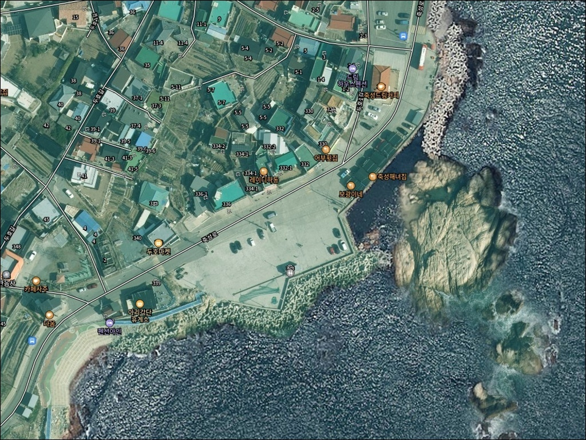
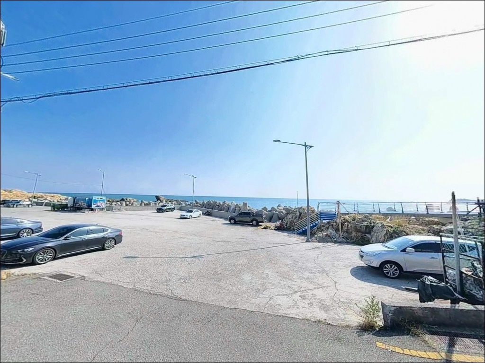
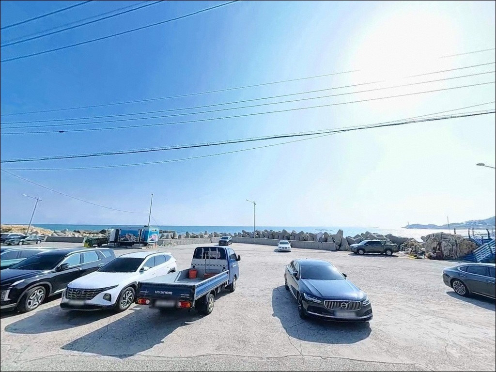
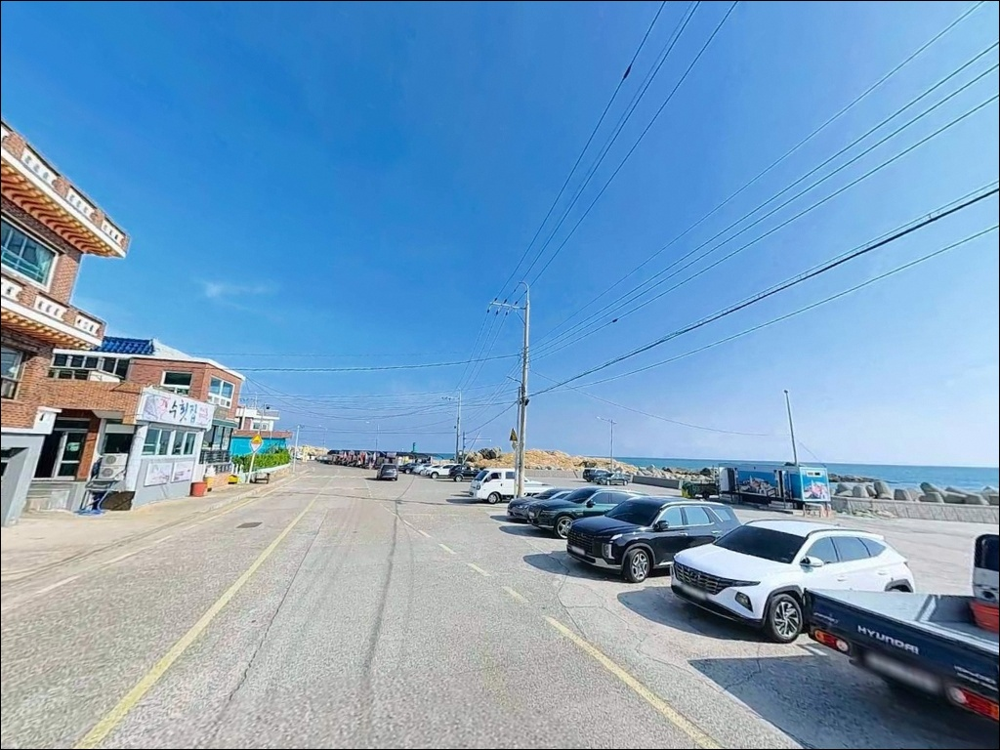
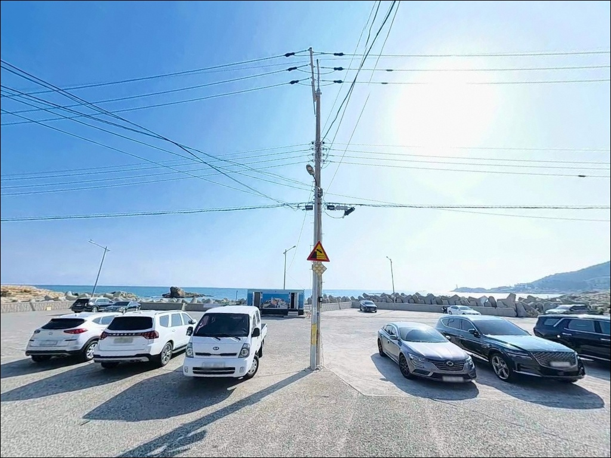
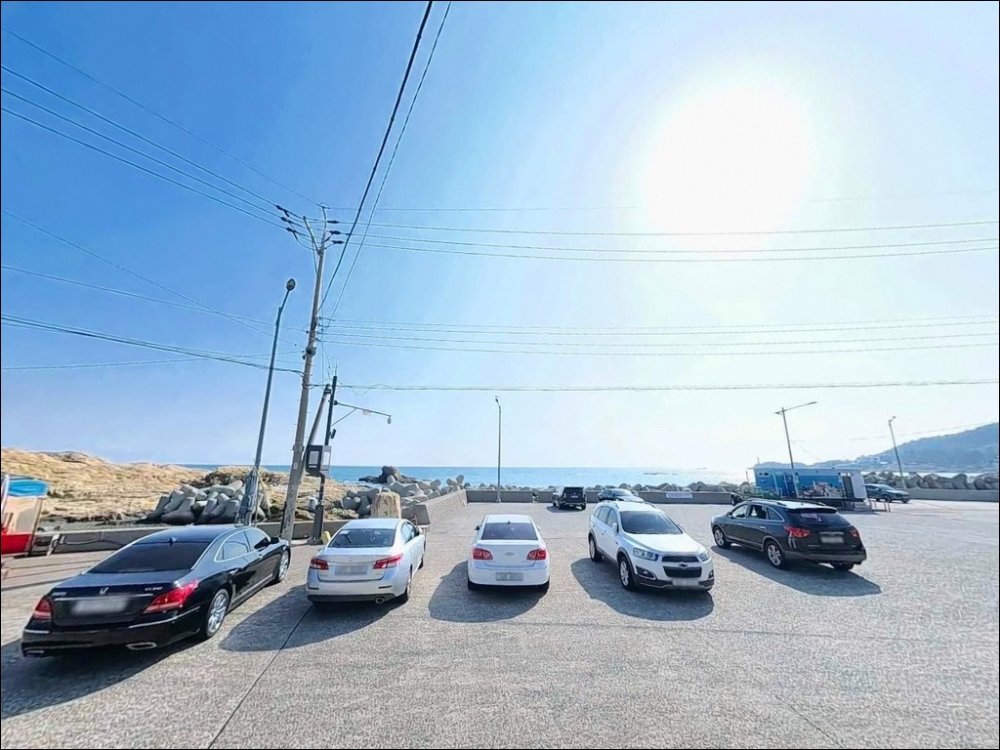
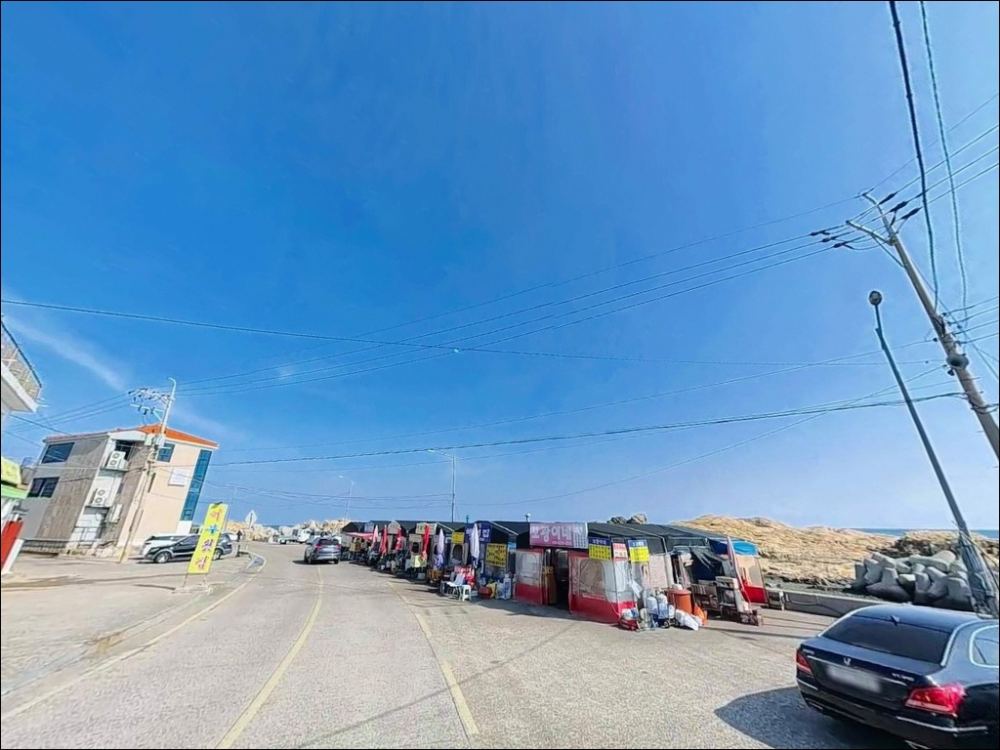
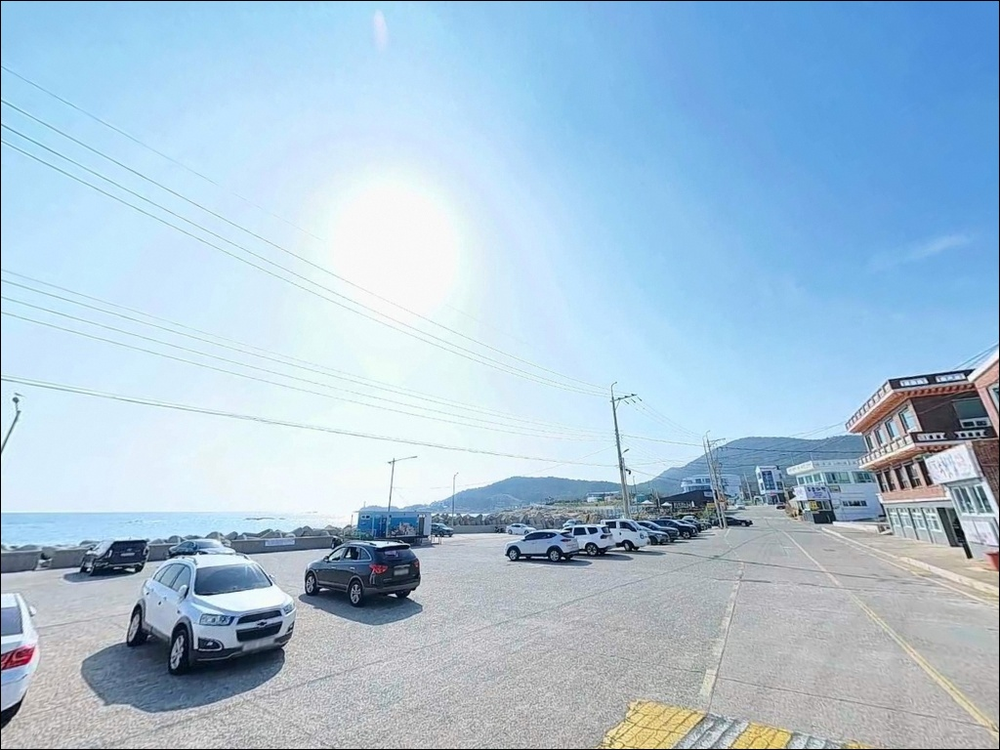
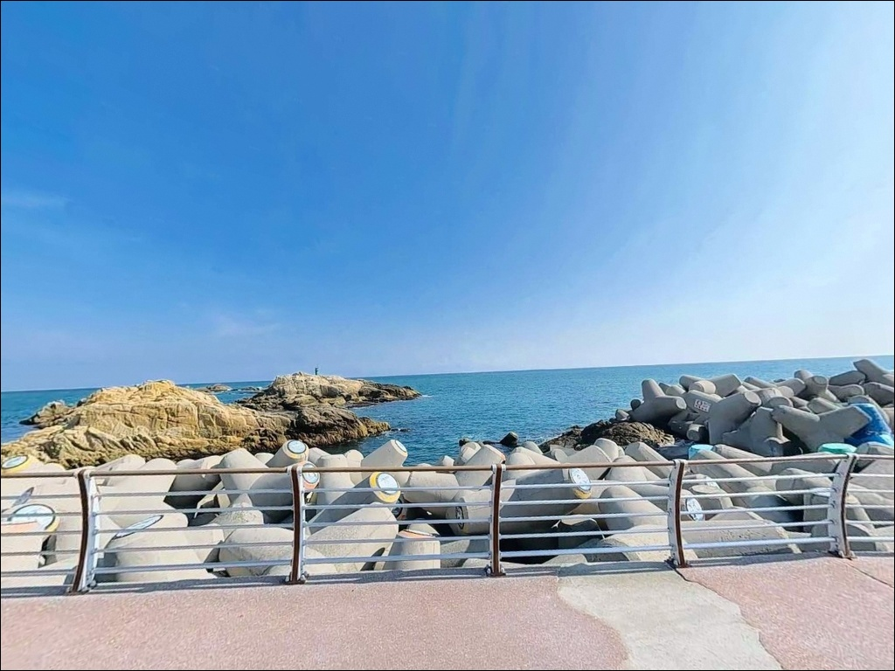

기장 두호해변 갯바위, 수심 3m 수중여에서 확인한 볼락 입질
이 페이지에는 광고(제휴 링크 포함)가 있으며, 광고 링크를 통해 구매하면 운영자가 판매 수익 또는 수수료를 받을 수 있습니다. 포인트 사진: 카카오맵 스카이뷰·로드뷰. 이 페이지의 지도·사진 이미지는 카카오맵의 실제 서비스 이미지와 다를 수 있습니다.


포인트 안내
두호해변
부산광역시 기장군 기장읍 죽성리 134-18
죽성드림성당을 보러 왔다가
낚시 자리를 무작정 잡으면
파도 영향권과 안전한 구간을
구분하지 못한 채 자리를 깔게 됩니다.
두호해변은 갯바위·방파제·모래 해변이
하나의 해안선으로 이어진 복합 지형이라
어떤 자리에 들어서느냐에 따라
낚시 방식과 안전 여건이 달라집니다.
이 글은 두호해변의 지형 조건,
낚시 방식별 자리 선택 기준,
차박 여건에 집중합니다.
조황 단정이나 특정 어종 보장은
이 글의 범위에 포함되지 않습니다.

1. 진입 동선과 주차 여건
기장읍에서 죽성로를 따라 진입하면
왕복 2차선 포장도로가 방파제 입구까지
막힘 없이 연결되어 있습니다.
승용차는 물론 캠핑카 수준의 차량도
진입에 큰 어려움이 없는 도로 폭입니다.
다만 죽성드림성당 쪽으로 분기하는 소로는
차량 1대 통행 수준으로 좁아지는 구간이 있어
대형 SUV나 캠핑 장비를 실은 차량이라면
진입 전 위성지도로 확인하는 편이 안전합니다.
주차는 죽성드림성당 인근 공영주차장과
방파제 노상 주차 공간 두 곳을 활용합니다.
방파제 입구 공터는 회차가 가능한 수준이며,
평일이나 야간에는 주차 여유가 충분한 편입니다.
주말 오전에는 관광객 차량이 몰리므로
이른 시간 진입이 유리합니다.
두호해변은 죽성만을 정면으로 바라보는 구조로
동풍·동북풍이 강한 날에는 파도가
외항 쪽 갯바위 너럭바위까지
직접 들어오는 경우가 있습니다.
기상청 해상예보를 확인한 뒤 출발하는 것이
기본 조건입니다.

2. 차박 환경과 야간 체류 여건
죽성드림성당 인근은 경관 조명과
방파제 보안등이 갖춰져 있어
야간에도 주차장 주변은 비교적 밝습니다.
치안 면에서는 유명 관광지 특성상
야간에도 유동 인구가 있어
안정적인 분위기가 유지되는 편입니다.
반면 차박을 조용히 즐기고 싶은 낚시인에게는
관광지 주차장이 완전히 맞는 환경은 아닙니다.
두호마을 민가가 가까이 있어
야간 소음과 조명 관리가 기본 매너입니다.
고성방가·음주가무는 삼가야 하며,
부산시 공식 안내에도 이 내용이 명기되어 있습니다.
성당 주변과 공원 구역에서는 취사가
제한될 수 있으므로 화기 사용보다는
조리된 음식을 지참하는 방식이 현실적입니다.
죽성만을 정면으로 바라보는 위치 특성상
동풍이 강한 날에는 파도 소음과
바람 영향을 고려해 체류 여건을
사전에 판단해 두는 편이 좋습니다.


3. 주변 편의시설 및 인프라 현황
두호해변 인근에는 편의점, 카페,
장어구이 식당가가 형성되어 있어
식사와 기본 보급이 비교적 편리합니다.
죽성리 해안도로 라인을 따라
상권이 갖춰진 구간이 이어지며,
기장군청 방향으로 이동하면
대형 마트와 병원이 차량 10분 거리에 있습니다.
낚시 소품이나 채비가 부족하다면
약 3km 거리의 대변항 일대를 활용하는 편이
가장 효율적인 이동 경로입니다.
대변항은 기장 권역 낚시 인프라의 중심지로
낚시점과 식당이 함께 밀집해 있어
출조 당일 현장 보급이 가능한 수준입니다.

방문 전 반드시 챙겨야 할 준비사항
두호해변은 외해와 직결된 구조로
기상 변화가 빠른 편입니다.
출발 전 기상청 해상예보와
풍속 예보를 반드시 확인하고,
바다타임에서 죽성리 기준 물때를
사전에 파악해 두는 것이 기본 준비입니다.
조류 흐름과 파도 조건이 낚시 자리 선택을
결정하는 가장 큰 변수입니다.
갯바위 진입 시에는 미끄럼 방지 신발과
구명조끼 착용이 필수입니다.
너럭바위 끝단은 파도 상태에 따라
위험도가 급변하므로
동풍·동북풍 강풍 예보 시에는
외항 쪽 갯바위 접근을 삼가는 편이 좋습니다.
관광지 인접 포인트 특성상
성당 주변 보행자가 많습니다.
캐스팅 전에는 반드시 주변 동선을 확인하고,
채비 손실이 잦은 암초 지대 특성상
여분 채비를 넉넉하게 준비해 가는 편이 좋습니다.
야간 낚시 시에는 헤드랜턴을 지참해야 하며,
갯바위 끝단에는 별도 조명이 없습니다.

5. 지형 기반 낚시 여건 분석
두호해변의 구조는 크게 세 구간으로 나뉩니다.
죽성드림성당 옆 너럭바위 갯바위 구간,
두호항 방파제 구간(178m),
모래·자갈 해변 구간이 하나의 해안선으로
연결되어 있는 형태입니다.
방파제 끝단 수심은 5~7m 안팎이며,
갯바위 주변은 3~6m 수준으로
암초·수중여 발달로 어종 서식 여건이 갖춰진 구조입니다.
너럭바위 끝단은 외해(동해) 조류를
직접 받는 위치로,
수심이 발밑에서 빠르게 증가하고
바닥 굴곡이 심한 편입니다.
반면 방파제 내항 쪽은 조류가 완만하고
수면이 잔잔해 찌낚시와 생활낚시에
안정적인 자리를 제공합니다.
두 구간의 조류 성격이 달라
낚시 방식에 따라 자리를 구분해서 들어가는 것이
이 포인트를 공략하는 기본 방식입니다.
죽성만 일대는 볼락, 감성돔, 벵에돔,
전갱이, 농어, 도다리 등이
기대 어종에 포함되는 해역이며,
가을~겨울에는 겨울 야간 호래기 낚시인들이
죽성 권역 방파제를 찾는 시즌이 형성됩니다.
최신 조황은 출조 전에 반드시
두호항 낚시, 죽성방파제 조황 키워드로
검색해 보시기 바랍니다.


포인트 지형에 맞는 낚시 스타일 선택 기준
갯바위 루어낚시는 이 포인트에서
가장 잘 맞는 스타일입니다.
너럭바위 끝단에서 외해 방향으로 캐스팅하면
암초와 수중여 사이를 탐색할 수 있는
구조 조건이 갖춰져 있습니다.
지그헤드에 웜을 결합한 채비로
중·하층을 천천히 탐색하는 방식이
볼락과 소형 락피시 공략에 유효합니다.
야간에는 성당과 방파제 보안등의 집어 효과가
방파제 주변에서 작용해
볼락 라이트게임 조건이 살아납니다.
찌낚시는 방파제 외항 쪽과
죽성만 안쪽 흘림이 가능한 구간에서
구멍찌 채비를 활용하는 방식이 유효합니다.
감성돔과 벵에돔이 기대되는 구조로,
기장권 시즌인 여름~가을에
파도가 적당히 있는 날의
갯바위 외항 사면이 찌낚시 적합 자리입니다.
원투낚시는 두호해변 모래·자갈 해변 구간에서
보조적으로 운용할 수 있습니다.
수심이 깊지 않아 조과가 한정적이지만,
바닥층 도다리나 붕장어를
야간에 기대해볼 수 있는 구간입니다.
방파제 정면 방향으로 멀리 던지는 방식이
이 포인트에서는 효율적입니다.

7. 대안 포인트와 플랜 B 동선
두호해변이 파도나 혼잡으로 여의치 않을 때
첫 번째 대안은
죽성방파제입니다.
두호해변에서 남쪽으로 약 300m 거리에 있어
도보로 이동할 수 있으며,
방파제 등대가 설치된 안정적인 구조로
야간 호래기 포인트로 현지에 알려진 곳입니다.
동일 죽성만 해역이라 어종 조건이 유사합니다.
차량으로 이동할 여유가 있다면
약 3km 거리의 대변항 동방파제를
두 번째 대안으로 고려합니다.
방파제 길이 550m 규모로
감성돔 찌낚시, 원투낚시, 루어 등
다양한 낚시 스타일을 수용하며,
야간 조명과 낚시점·식당이 갖춰져
기장 권역에서 가장 안정적인 낚시 거점입니다.
월전방파제도 실용적인 대안입니다.
두호해변에서 해안산책로를 따라
도보 접근이 가능한 수준의 거리에 있으며,
방파제와 갯바위가 결합된 구조로
두호해변과 유사한 낚시 여건을 제공합니다.

지형을 이해하면
두호해변이 다르게 보입니다
갯바위 루어낚시나 찌낚시를 즐기는 낚시인이라면
두호해변의 복합 지형 구조는
잘 맞는 조건입니다.
너럭바위 끝단의 루어 포인트,
방파제 내항의 안정적인 찌낚시 자리,
그리고 겨울 야간 호래기까지
한 곳에서 복수의 낚시 방식을
운용할 수 있는 구조입니다.
죽성만 일대는 관광지 인접 구조임에도
야간 차박 여건이 비교적 안정적인
기장권 포인트입니다.
반면 주말 주간에는 관광객 차량이 몰리고,
야간 소음·취사 제한 사항도 존재합니다.
기상 확인, 자리 사전 판단, 주민 배려 준수,
이 세 가지를 갖추고 간다면
기장 해안선 중 충분히 기억에 남는
출조가 될 수 있는 포인트입니다.
낚시를 마치고 죽성만을 바라보며
조용히 하룻밤 머무는 차박 여행자에게도
이 일대는 대안이 풍부한
기장 해안선의 좋은 출발점입니다.